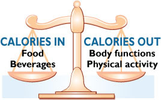

Finding a Balance
 ShareCompartir
ShareCompartir
There's a lot of talk about the different components of food. Whether you're consuming carbohydrates, fats, or proteins all of them contain calories. If your diet focus is on any one of these alone, you're missing the bigger picture.
Video - Finding a Balance
To support efforts to help individuals achieve caloric balance and to provide insights into ways in which communitites can be involved, CDC-TV has just released a new video in its "Health Matters" series "Finding a Balance" providing expert perspectives on caloric or "energy" balance and personal stories of how individuals have made changes in their lives to achieve this balance. Watch or download the video (4:15 mins)
The Caloric Balance Equation
When it comes to maintaining a healthy weight for a lifetime, the bottom line is – calories count! Weight management is all about balance—balancing the number of calories you consume with the number of calories your body uses or "burns off."
- A calorie is defined as a unit of energy supplied by food. A calorie is a calorie regardless of its source. Whether you're eating carbohydrates, fats, sugars, or proteins, all of them contain calories.
- Caloric balance is like a scale. To remain in balance and maintain your body weight, the calories consumed (from foods) must be balanced by the calories used (in normal body functions, daily activities, and exercise).

Top of Page| If you are... | Your caloric balance status is... |
|---|---|
| Maintaining your weight | "in balance." You are eating roughly the same number of calories that your body is using. Your weight will remain stable. |
| Gaining weight | "in caloric excess." You are eating more calories than your body is using. You will store these extra calories as fat and you'll gain weight. |
| Losing weight | "in caloric deficit." You are eating fewer calories than you are using. Your body is pulling from its fat storage cells for energy, so your weight is decreasing. |
Am I in Caloric Balance?
If you are maintaining your current body weight, you are in caloric balance. If you need to gain weight or to lose weight, you'll need to tip the balance scale in one direction or another to achieve your goal.
If you need to tip the balance scale in the direction of losing weight, keep in mind that it takes approximately 3,500 calories below your calorie needs to lose a pound of body fat.1 To lose about 1 to 2 pounds per week, you'll need to reduce your caloric intake by 500—1000 calories per day.2
To learn how many calories you are currently eating, begin writing down the foods you eat and the beverages you drink each day. By writing down what you eat and drink, you become more aware of everything you are putting in your mouth. Also, begin writing down the physical activity you do each day and the length of time you do it. Here are simple paper and pencil tools to assist you:
Want to try an interactive approach evaluate your food intake and physical activity? Go to the SuperTracker. The site will give you a detailed assessment and analysis of your current eating and physical activity habits.
Physical activities (both daily activities and exercise) help tip the balance scale by increasing the calories you expend each day.
Recommended Physical Activity Levels
- 2 hours and 30 minutes (150 minutes) of moderate-intensity aerobic activity (i.e., brisk walking) every week and muscle-strengthening activities on 2 or more days a week that work all major muscle groups (legs, hips, back, abdomen, chest, shoulders, and arms).
- Increasing the intensity or the amount of time that you are physically active can have even greater health benefits and may be needed to control body weight.
- Encourage children and teenagers to be physically active for at least 60 minutes each day, or almost every day.
- For more detail, see How much physical activity do you need?
The bottom line is… each person's body is unique and may have different caloric needs. A healthy lifestyle requires balance, in the foods you eat, in the beverages you consume, in the way you carry out your daily activities, and in the amount of physical activity or exercise you include in your daily routine. While counting calories is not necessary, it may help you in the beginning to gain an awareness of your eating habits as you strive to achieve energy balance. The ultimate test of balance is whether or not you are gaining, maintaining, or losing weight.
Questions and Answers About Calories
Q: Are fat-free and low-fat foods low in calories?
A: Not always. Some fat-free and low-fat foods have extra sugars, which push the calorie amount right back up. The following list of foods and their reduced fat varieties will show you that just because a product is fat-free, it doesn't mean that it is "calorie-free." And, calories do count! See FAT-Free Versus Calorie Comparison for more information.
Always read the Nutrition Facts food label to find out the calorie content. Remember, this is the calorie content for one serving of the food item, so be sure and check the serving size. If you eat more than one serving, you'll be eating more calories than is listed on the food label. For more information about the Nutrition Facts food label, visit How to Understand and Use the Nutrition Facts Food Label.
Q: If I eat late at night, will these calories automatically turn into body fat?
A: The time of day isn't what affects how your body uses calories. It's the overall number of calories you eat and the calories you burn over the course of 24 hours that affects your weight.
Q: I've heard it is more important to worry about carbohydrates than calories. Is this true?
A: By focusing only on carbohydrates, you can still eat too many calories. Also, if you drastically reduce the variety of foods in your diet, you could end up sacrificing vital nutrients and not be able to sustain the diet over time.
Q: Does it matter how many calories I eat as long as I'm maintaining an active lifestyle
A: While physical activity is a vital part of weight control, so is controlling the number of calories you eat. If you consume more calories than you use through normal daily activities and physical activity, you will still gain weight.
Q. What other factors contribute to overweight and obesity?
A: Besides diet and behavior, environment, and genetic factors may also have an effect in causing people to be overweight and obese. For more, see Other Factors in Weight Gain
Want to learn more?
Cutting Calories at Every Meal
You can cut calories by eating foods high in fiber, making better drink choices, avoiding portion size pitfalls, and adding more fruits and vegetables to your eating plan.
Losing Weight
Even a modest weight loss, such as 5 to 10 percent of your total body weight, can produce health benefits.
Physical Activity for a Healthy Weight
Physical activity can increase the number of calories your body uses for energy or "burns off." The burning of calories through physical activity, combined with reducing the number of calories you eat, creates a "calorie deficit" that can help with weight loss.
References
1DHHS, A Healthier You, page 19. Available online:
http://www.health.gov/dietaryguidelines/dga2005/healthieryou/html/chapter5.html
2DHHS, AIM for a Healthy Weight, page 5. Available online:
http://www.nhlbi.nih.gov/health/public/heart/obesity/aim_hwt.pdf [PDF-2.17MB]
- Page last reviewed: May 15, 2015
- Page last updated: May 15, 2015
- Content source: